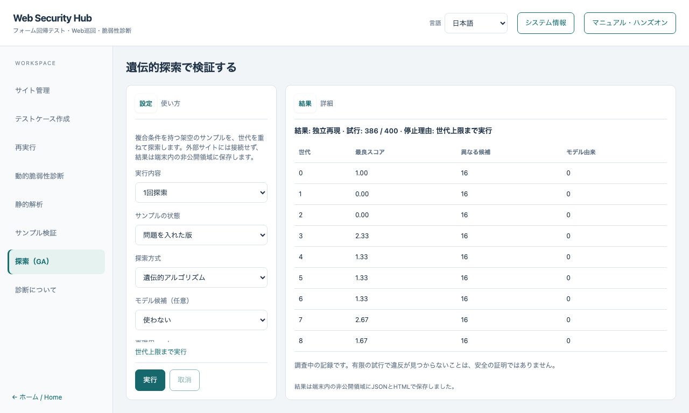
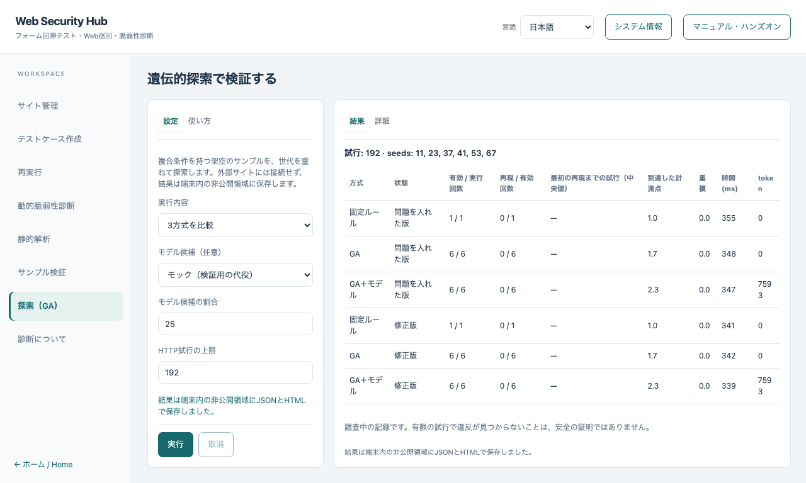

遺伝的探索ハンズオン
English · サンプル検証 · 基本コース
3つの条件が同時にそろったときだけ違反になる架空のサンプルを、世代を重ねて探索します。
外部サイト、実際の認証情報、APIキーは不要です。言語モデルは任意で、初期状態では使いません。
1. 画面を開く
左のナビゲーションで 探索（GA） を選びます。設定と使い方は左、結果と詳細は右に表示されます。
サンプルはこの画面専用で、サイト管理で選んだサイトとは無関係です。
2. 問題を入れた版を1回探索する
1回探索、問題を入れた版、遺伝的アルゴリズム、モデル候補 使わない を選び、実行 を押します。
候補を作り、それぞれを独立した正常対照つきで実行し、良い候補を残して交叉・突然変異を行い、これを繰り返します。
違反らしい候補が見つかると、別のセッションで再実行します。この独立した再実行で確認できたものだけが 独立再現 と表示されます。

表の1行が1世代です。最良スコア、異なる候補の数、モデル由来の候補数を表示します。
行をクリック（またはフォーカスしてEnter）すると、その世代の全候補（演算、親、値、スコア）を 詳細 に表示します。
スコアは次の世代の候補を選ぶための順位付けで、違反の判定ではありません。
同じ候補を2回実行しません。各世代の上位の候補は、再実行せず観測済みの結果のまま次の世代の親として引き継ぐため、すべてのリクエストが新しい情報を得ます。
3. 正常版・修正版で再現しないことを確認する
同じ設定で 正常版 と 修正版 を実行します。結果は 再現の対象なし になります。
探索は、上限への到達、取消、正常対照の失敗、サンプルのソース変更のときも、理由を表示して止まります。
有限の試行で違反が見つからないことは、安全の証明ではありません。
4. 3方式を比較する
3方式を比較 を選びます。同じHTTP試行上限と、事前に固定したseedで、問題を入れた版と修正版に対して次を実行します。
| 方式 |
内容 |
| 固定ルール |
境界値と2の累乗の固定リストを順に試します。結果から学習しません |
| GA |
到達と新規性の観測を使い、選択・交叉・突然変異で候補を改善します |
| GA＋モデル |
同じGAの候補枠の一部をモデルに任せます。モデル候補を「使わない」以外にすると実行されます |

表は順位ではなく測定値として読みます。再現率（独立した再実行で違反を確認できた割合）、最初の再現までの試行、到達した計測点、重複した候補、時間、tokenを表示します。
修正版で再現した場合は誤検知であり、表で強調されます。
環境要因で終わった実行（連続実行でOSのローカルポートが尽きた場合など）は、待機後に1回再試行します。それでも無効なら再現率の集計から除き、「有効 / 実行回数」に件数を表示します。
既定の192試行では、6つのseedのうちGAが違反を見つけた回数は少ないか0でした。試行上限を増やして再比較してください。結果はseedと上限に依存し、どの方式が常に優れるとは言えません。
5. モデル候補（任意）
- 使わない が初期値です。モデルなしでも探索は完結します。
- モック は、最良の候補の近傍を返す決定的な検証用の代役です。言語モデルではなく、性能の主張はしません。
- この端末のモデル は、
127.0.0.1 のOpenAI互換サーバー（例：llama.cppのserver）に接続します。送るのは型付きの候補値とスコアだけで、URL・認証情報・ファイル・証拠は送りません。
応答は厳密なスキーマと許可された値で検査します。不正・途中切れ・拒否・過大・重複の応答は実行せず、限られた回数の再試行後はモデルなしでGAを続けます。
- モデルはスコープ、プロファイル、HTTP試行上限を変更できません。GAの枠を置き換えた候補は、追加の試行を使いません。
- 外部サービスへの送信は、この画面では提供しません。コマンドラインで、明示の許可フラグ、キーの環境変数名、費用上限が必要です。
6. 取消と保存
取消 で実行中の探索や比較を止めます。取り消した比較は未完了と表示します。結果はJSONとHTMLでアプリの非公開データ領域に保存します。保存した結果には架空とはいえ正確な入力が含まれるため、公開しないでください。
コマンドラインで同じ探索を実行する
npm run verifier:run -- --genetic-fixture --mode changed
npm run verifier:run -- --genetic-fixture --mode changed --method rules
npm run verifier:run -- --genetic-fixture --mode changed --llm mock
npm run verifier:run -- --genetic-compare --llm mock
コマンドラインの利用にはソースの依存関係が必要です。通常のアプリ操作にコマンドは不要です。